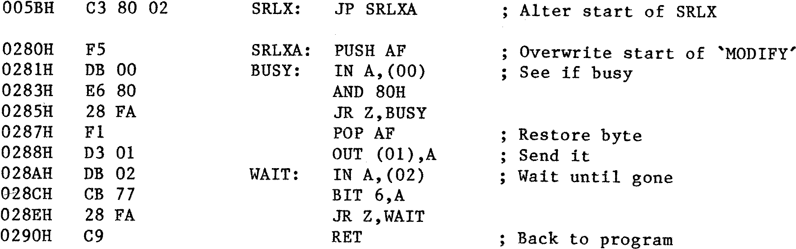

80-Bus News |
January–March 1982 · Volume 1 · Issue 1 |
| Page 46 of 55 |
|---|
If you have the assembly listing you can type it in, modify it and reassemble. Or you can put a 2 byte JR to the end of the program in place of the LDI, and put the new code at the end with conditional and unconditional jumps back to the required places. If you adopt the latter course, note that the code proper ends at 0D48H with a C9, but the next 2 bytes are used as a store.
BASIC IN RAM. This one led to some embarrassment for me because I overlooked the cause and made a long distance telephone call to someone who kindly pointed out my ‘basic’ error. When BASIC is executed it asks how much RAM to use. If you do not wish to reserve any and press enter, BASIC will ‘measure’ the RAM. If there is no ROM or ‘empty’ RAM at the top, just below BASIC, the Nascom ROM BASIC will corrupt itself as it is not protected against this possibility (since it expects to be in ROM). The solution is to enter a limit of say 55000 in response to the query SIZE?.
NAS-SYS Handshake. One of my very few ‘hates’ about Nascom Software has been the need to have a number of ‘USER’ routines, each one marginally different, to enable printer handshaking to ZEAP, NASPEN, NAS-SYS etc. Since it is now easy to overwrite parts of the firmware on a temporary basis, I have included a routine, accessed from my MENU, that provides H/S by altering the SRLX routine in NAS-SYS. The SRLX routine is used to send bytes to the serial port, so it is used by all devices talking to a serial printer. I use an IMP printer at present, so my routine is written to suit this printer but the software can easily be changed if necessary. The space allocated to SRLX is not sufficient to allow the modified routine to be put in the same locations, and the next routines may be needed by the Programs that are using the Printer. One routine that is most unlikely to be required during the execution of a program is the ‘M’ routine. My overwrite routine therefore looks like this (NAS-SYS 3):
At the end of the program, a RESET restores NAS-SYS to its unmodified state. The same overwrite routine could be used with NS1 but addresses would have to be changed.
This system has been in use for about three months now and the ability to switch rapidly between systems and formats has been very useful. Particular advantages over the old Multimapping system have been the ability to use 64K of RAM, to load NS firmware and utilities instantly and to overwrite NAS-SYS and to restore it at will. It is also very useful to be able to load software into memory under one operating system, and to switch to the other system although this was also possible with the old MM setup.
| Page 46 of 55 |
|---|